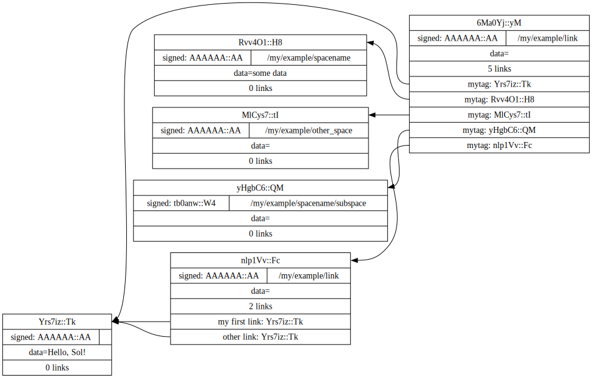

This introduction uses the `lk` cli with bash. Follow along by downloading the latest release.
lk --versionlinkspace-cli linkspace-cli - 0.6.0 - main - 612b10f - 1.77.0-nightly
Point
A single unit|event|message in linkspace is called a `point`. Each can hold ~64kb.
echo "Hello, Sol!" | lk point > mylogPoints have optional properties besides the data field.
a spacename:
echo -n some data | lk point /my/example/spacename --data-stdin >> myloga timestamp in microseconds since epoch using `now` by default:
# 12minuites and 10 seconds in the past - the [..] syntax is touched on later
lk point /my/example/other_space --stamp [now:-12m10s] >> mylog and a public key + signature:
KEY=$(lk key --no-pubkey --no-lk --password 'my secret')
lk point /my/example/spacename/subspace --sign --enckey "$KEY" --password 'my secret' >> mylogAll points are hashed using Blake3.
Point's refer to the hashed fields/data. The point, hash, and a header are packed into the packet format. Functions/APIs deal exclusively in the packet format.
`pktf` formats a stream of packets.
cat mylog | lk pktf "'[data]' hashes to: [hash:str]"'Hello, Sol!
' hashes to: Yrs7iz3VznXh-ogv4aM62VmMNxXFiT4P24tIfVz9sTk
'some data' hashes to: BhLJUReezeogaqZUV2mC0pu1iwVAZMlLT3FeTmX0KLQ
'' hashes to: v5m3yqKtUr4F_SkiuPMIwccWCsa6PHoZa9t6yZzVvHA
'' hashes to: xPiohwQ6EVL2_6fOtOnyJM4mfM1JpUp-bm3VRKGG0O8
The format string evaluates and substitutes '[..]' expressions. eg. output only data: `cat mylog | lk pktf "[data]"`.
The limited set of fields with their fixed wire format makes them fast to process. For example using `lk filter`.
This command only passes those with a spacename starting with `/my/example` and 1 additional space component
cat mylog | lk filter /my/example:* | lk pktf "[hash:str] [space:str]"BhLJUReezeogaqZUV2mC0pu1iwVAZMlLT3FeTmX0KLQ /my/example/spacename
v5m3yqKtUr4F_SkiuPMIwccWCsa6PHoZa9t6yZzVvHA /my/example/other_space
Points are addressable by their hash. To reference one point from another add a link. Each link is a 16 byte tag and 32 byte hash. If fewer than 16 bytes are used in the tag it is left-padded with 0's.
HASH=($(cat mylog | lk pktf [hash:str]))
lk point "/my/example/linkpoing" -- "my first link:${HASH[0]}" "other link:Yrs7iz3VznXh-ogv4aM62VmMNxXFiT4P24tIfVz9sTk" >> mylogOptionally get fancy with `pktf` and `xargs`.
cat mylog | lk pktf "mytag:[hash:str]" | xargs lk point /my/example/link -- >> mylogA tool like `lk collect` has a few additional options for linking points received on stdin. However, the `lk` cli has its limits. Consider using a better programming language when doing non-trivial stuff.
Click here to see a dot graphiv representation of `mylog`

Creating packets with `lk point` detects what type of packet is being created. However, it is better to be explicit. The 3 types of points are: `datapoint`, `linkpoint`, or `keypoint` (a signed linkpoint).
For the linkpoint and keypoint command, data is not read from stdin by default.
echo somedata | lk linkpoint /my/other_spacename --data-stdin | lk pktf "[hash:str] = [data]"nQS3grNm_BM-YHdirso3T8m1qWbOZW1MOyUTASTIg5M = somedata
Database
Up to this point packets were simply dumped to a file. Linkspace is primarily its packet format. It can be used with plain files or any database. However, library also includes a database.
export LK_DIR=/tmp/linkspace ;
lk init ;
cat mylog | lk write > /dev/null ; LkInfo { kind: "lmdb", dir: Some("/tmp/linkspace") }
Instead of piping into `lk write`, most commands take a write destinations such as 'db'.
echo hello world | lk point --write db --write file:mylog --write stdout | lk pktf [data]hello world
The database has three indices.
- 'log' is indexed on the timestamp a point is written to the database.
- 'hash' is indexed on the point's hash.
- 'tree' is essentially indexed on a point's [space, create stamp] (see the guide for full details).
The database is accessed through the runtime. The runtime is notified whenever ANY process or thread saves to the database. Using the library this requires registering callbacks that are triggered by a user-driven eventloop (guide).
The `lk` cli is focused on piping packets and handles most of the runtime.
Getting points from the runtime uses functions: `read`, `watch`, and `tap`. `read` accesses the current database, `watch` reacts when new packet are written, and `tap` combines read and watch.
lk tap-tree /my:** | lk pktf "[space:str]" > ./watching &[1] 26196
cat ./watching/my/example/link
/my/example/linkpoing
/my/example/spacename
/my/example/other_space
/my/example/spacename/subspace
The current packets are read from disk and piped to a file. When a (new) matching point is written to the database `lk tap-tree` is notified and writes it out.
lk linkpoint /my/my/my --write dbcat ./watching/my/example/link
/my/example/linkpoing
/my/example/spacename
/my/example/other_space
/my/example/spacename/subspace
/my/my/my
Applications
There are two fields not yet shown: domain and group.
The domain is analogous to a IP port. An application pick a domain name (max 16 bytes). For example `imageboard`.
The cli syntax is `domain:group:/space`. If one is left out or empty the default is the null domain and the public group.
lk linkpoint imageboard::/spacename | lk p "[domain:str]"imageboard
Building an application is done by mapping an application state to and from linkspace packets.
In classic network systems most common today, a single authority holds the database and everyone is dependent on the order they define.
It is the special case for networked applications.
Most people see the digital space through the assumptions and limitations of this special case.
This has enormous (social) implications.
However, it is straightforward to emulate those classic systems by having a single public key sign packets create a total order.
As an example consider a drawing application where multiple people paint to a single image without using a server. A mapping could look like:
- Image data is saved in data points
- Every link in a linkpoint is: a hash to an image, and a tag holding (x,y) coordinates.
By choice we'll deal with the distributed challenges as follows to keep things simple:
We don't care about missing data, and we'll trust people to set an approximately right timestamp. Every time we receive an update (even if newer updates were already added) we'll re-paint over our current picture by painting everything since that timestamp.
Adding an image might look something like:
X=30 ; Y=200 ; IMG="https://upload.wikimedia.org/wikipedia/commons/3/35/Tux.svg" ;
curl -s $IMG | lk datapoint > tux.pkt
IMG_HASH=$(cat tux.pkt | lk p "[hash:str]")
lk linkpoint imageboard:: -- $(printf "%08d%08d" "$X" "$Y"):$IMG_HASH >> tux.pkt
lk write --pkts ./tux.pkt # Instead of `cat tux.pkt |` reading directly from a pkts fileBuilding an image requires the program to tap points in `imageboard::` and for each result over a image.
lk tap-tree "imageboard::" --max 1 \
| lk p "[hash:str] has the links:\n [links]" 84hbJStKKUVl7CwNDlKNJtzPYLlw3hpEjBHvrJOZLw8 has the links:
0000003000000200:Sz0ZZDWxKht-jbM7Tfkn0nis4tNoKNPH_kfI7JYUnY4
Otherwise, the previous example would not have worked.
Without the quotes the characters `[lin` in "[links]" would be interpreted by the default bash shell.
A link might hold a point's hash that is not (yet) in the database. An application has to decide how to handle the situation. In this example we'll just wait. Waiting can be done manually. e.g.
lk watch-tree "imageboard::" --max 1 \
| lk p "[links]" \
| cut -d':' -f2 \
| xargs -i lk watch-hash "{}" \
| lk pktf "got point [hash:str] which has [data_size:str] bytes"error: Args { inner: ["/home/rs/Projects/linkspace/target/debug/lk", "watch-tree", "imageboard::", "--max", "1"] }
"External arg failure linkspace-watch-tree not found - Os { code: 2, kind: NotFound, message: \"No such file or directory\" }"
Or use `lk get-links`. It has a few common strategies.
lk watch-tree "imageboard::" --max 1 \
| lk get-links pause \
| lk pktf "[hash:str]"error: Args { inner: ["/home/rs/Projects/linkspace/target/debug/lk", "watch-tree", "imageboard::", "--max", "1"] }
"External arg failure linkspace-watch-tree not found - Os { code: 2, kind: NotFound, message: \"No such file or directory\" }"
To complete the imageboard application we'll have to add a few more steps to merge the data into a single picture. See the tutorial for an example on doing this and more.
The final piece of the puzzle is the group field. A group is 32 bytes to signal the intended set of recipients. It is orthogonal to the domain field. Well designed applications should not care what group is addressed.
PUB=$(echo "Hello, Sol!" | lk data | lk pktf "[hash:str]")
lk linkpoint :$PUB:/example | lk p "[group:str]"Yrs7iz3VznXh-ogv4aM62VmMNxXFiT4P24tIfVz9sTk
If no group is specified (either in an argument or $LKGROUP environment variable) the public group is used.
lk linkpoint :[#:pub]:/example | lk p "[group:str]" Yrs7iz3VznXh-ogv4aM62VmMNxXFiT4P24tIfVz9sTk
'creating' a group is as simple as picking 32 bytes, deciding who the members are, and ensuring they can exchange data.
Its a tiny byte-templating language included in the library for convenience.
ABE is also heavily used for CLI arguments, e.g. `lk linkpoint :: –stamp [now]` or `[now:+2h]`
The other special group is `[0;32]`, also called the private group. It's usually referenced with the expression `[#:0]`. Functions/subcommands that read/write existing points skip and/or warn whenever a point from the private group is seen unless enabled with `–private`.
lk linkpoint domain:[#:0] | lk write 2>&1 # creating a packet is ok - but receving is not accepted by `lk write` without --privateerror: Args { inner: ["/home/rs/Projects/linkspace/target/debug/lk", "write"] }
Pkt(
PrivateGroup,
)
A network to exchange points in a group can be made from scratch. Linkspace does not prescribe a way to do so. Each group / network is different, and no single solution can cover every situation.
An example for a network is to use `lk watch imageboard:$MYGROUP | …` and forward the entire stream to another device using netcat/socat, ssh, email, http, a USB stick, or other way to exchange bytes.
Linkspace is designed to always be a streams of packets. This keeps streams compatible with all tools that process streams.
However, sometimes packets should hold additional context information as they're shared around. For that, each packet has a mutable header excluded from the hash.
Filters also work on these fields. With this its possible to build for specific network topologies.
netcat 10.0.0.1 -p 6000 | lk route ubits0:=:0000 | lk write & # get packets from a host and set their ubits0 to 0000
netcat 10.0.2.0 -p 6000 | lk route ubits0:=:0001 | lk write & # get packets from another host and set their ubits0 to 0001
lk linkpoint example::/hello | lk route ubits0:=:0002 | lk write # write my packets with ubits 0002
lk watch-log --asc example::/hello -- "ubits0:>:0000" | nc 10.0.0.1 -p 6000 & # forward all packets with ubits0 higher than 0000 back to host.
A database is shared between multiple applications on a single device. This allows some level of interprocess communications.
Somethings are common enough that the library includes functions called 'conventions'. These create or watch for points with some predefined spacename, links, and data format.
One such convention is the `pull` convention. An application creating a pull point signals that it wants a set of packets retrieved from others if possible.
lk pull imageboard:: --write stdout | lk p "[space:str]\n\n[data]"error: Args { inner: ["/home/rs/Projects/linkspace/target/debug/lk", "pull", "imageboard::", "--write", "stdout"] }
missing :qid:... option
Pull creates a point containing a query. Queries define a 'set of points' in linkspace and are used in many places.
This can be seen in action in an application like imageboard (bash) or mineweeper (python) as they pull and an exchange process like anyhost.exchange server/client ensures that set of packets is retrieved.
The query is a structure used throught linkspace. The command line arguments for `lk filter`, `lk watch`, etc are syntax sugar over queries. Add `–print-query` to those commands to see the effective query.
Queries are multiline strings. They're designed such that the querystring1 ++ querystring2 results in the common subset of both (or an error if the result matches no packets).
lk print-query example::/ok type:1:\x02
domain:=:\0\0\0\0\0\0\0\0\0example
group:=:b\xbb;\x8b=\xd5\xceu\xe1\xfa\x88\/\xe1\xa3\:\xd9Y\x8c7\x15\xc5\x89>\x0f\xdb\x8bH}\\\xfd\xb19
prefix:=:/ok
depth:=:\x01
lk print-query example::/ok -- "spacename:=:/not_ok"error: Args { inner: ["/home/rs/Projects/linkspace/target/debug/lk", "print-query", "example::/ok", "--", "spacename:=:/not_ok"] }
Error {
context: "could not turn stmt into valid extpred",
source: ParseKind(
spacename,
),
}
That's it for this quick introduction. For a more in-depth technical guide or the library API see the Guide. The show some of this in action.